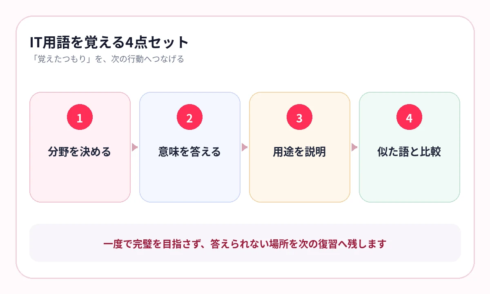

略語の日本語名は覚えたのに、選択肢の説明を読むと区別できない。そんな用語が増えていませんか？
ITパスポートは、経営、法務、プロジェクト管理、セキュリティ、ネットワークなど、異なる領域の用語が一つの試験に集まります。
用語を五十音順に覚えるより、どの分野で、何のために使われ、何と混同しやすいかをセットにすると、選択肢を判断しやすくなります。
まず、3分野のどこにいるかを決める
IPAの公式出題範囲は、ストラテジ系、マネジメント系、テクノロジ系の3分野で構成されています。
ストラテジ
企業活動、法務、経営戦略、システム戦略をまとめます。
マネジメント
開発、プロジェクト、サービス、監査の役割を整理します。
テクノロジ
基礎理論、ハードウェア、ソフトウェア、DB、ネットワーク、セキュリティをつなぎます。
略語は、4点セットで答える
- 正式名称または日本語の意味
- 何を目的に使うか
- 具体的な利用例
- 似た用語との違い
たとえばセキュリティ用語なら、攻撃名だけではなく、どのような仕組みで、何を守る対策かまで答えます。経営用語なら、指標が何を判断するためのものかまで確認します。
略語を日本語へ翻訳して終わらず、「だから何に使うのか」まで言える形にします。
{kind=link}

似た用語は、同じページで比較する
IT用語は、一文字違いや似た目的のものが多くあります。別々に覚えるより、比較表で差を答えます。
| 比較軸 | 答える内容 |
|---|---|
| 目的 | 何を解決・管理・保護するか |
| 対象 | 人・情報・システム・業務のどれか |
| タイミング | 計画・開発・運用・監査のどこか |
| 具体例 | 実際の製品や業務でどう使われるか |
テキストの比較表や図をそのまま暗記ページにすると、単語の位置関係も残せます。
横にスワイプして画像を確認できます


過去問は、分野別の穴を見つける
問題を解く
正解だけでなく、迷った選択肢にも印を付けます。
分野へ戻す
ストラテジ・マネジメント・テクノロジのどこで迷ったかを分類します。
教材で確認
意味・用途・比較対象がまとまったページへ戻ります。
数日後に再出題
答えを隠し、同じ用語を別の順番で確認します。
シラバスを、覚えるページの地図にする
IPAは、出題範囲を詳細化したシラバスを公開しています。知らない用語をすべて単独カードにするのではなく、シラバスの分類へ戻して関連語をまとめます。
AI暗記シートでは、参考書やPDFのページを取り込み、用語・略語を隠して出題できます。分野名を教材名に入れ、弱点を優先して反復します。
- ストラテジ｜企業活動｜財務指標
- マネジメント｜プロジェクト｜工程
- テクノロジ｜セキュリティ｜攻撃と対策
- テクノロジ｜ネットワーク｜プロトコル
よくある質問
略語は正式名称まで覚えるべきですか？
正式名称が問われる場合もありますが、意味・用途・比較対象まで答えられる状態を優先します。
3分野を順番に終わらせるべきですか？
一通り学んだ後は、過去問の弱点に合わせて分野を行き来します。苦手分野だけを長く放置しないようにします。
シラバスはどう使いますか？
学習範囲の漏れを確認し、用語を分類する地図として使います。細かな用語をすべて同じ深さで覚える必要はありません。
参考情報
試験範囲・制度は公式情報、復習方法は学習科学の研究を参照しています。
略語を、選択肢で使える知識へ
分野・用途・違いを、まとめて反復
参考書やPDFの用語を隠し、ストラテジ・マネジメント・テクノロジごとに保存。迷った分野を優先して復習できます。
iPhone・iPad対応／3枚まで無料保存／継続利用は800円の買い切り